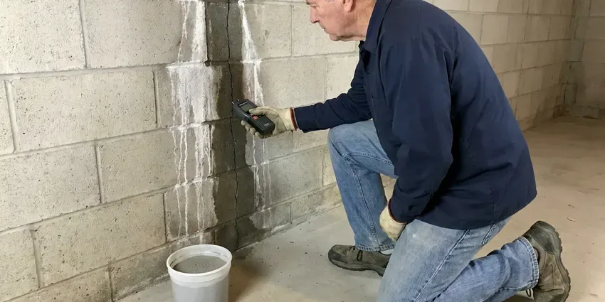

Leak Detection in Waterbury, CT
Experiencing signs of a leak in Waterbury, CT? GLV Plumbing offers prompt, accurate leak detection to protect your home.
- Fast, Accurate Detection
- Licensed & Insured
- Written Report for Insurance
- Prevent Expensive Damage

Pinpoint Your Plumbing Leaks in Waterbury, CT.
Don't let a hidden leak cause major problems; contact GLV Plumbing for immediate assistance.
Reliable Leak Detection Services in Waterbury, CT
GLV Plumbing checks every part of your plumbing system, from the meter and main service line to the slab, walls, irrigation and fixtures. We start with simple tests to confirm a leak exists, then close in on it step by step.
Our expertise includes:
- Detecting slab leaks under concrete slabs.
- Slab leak detection with acoustic listening devices.
- Thermal imaging for leaks behind walls and ceilings.

Additional Plumbing Maintenance Services in Waterbury, CT
Our maintenance and specialty plumbing services in Waterbury, CT protect your home year-round and extend the life of every system.


Customers
Why Choose GLV Plumbing for Leak Detection in Waterbury, CT?
Guessing at a leak location wastes money on holes in the wrong place. Our electronic methods let us mark the leak accurately before any drywall or concrete is touched.
- Accurate Location, Our technicians use specialized tools like acoustic detectors and thermal cameras to pinpoint leaks without unnecessary demolition.
- Clear Reporting, You receive photos and a written report of the leak and recommended repair.
- Pinpoint Accuracy, We combine several detection methods to verify the leak location before opening anything.
Citywide Coverage
GLV Plumbing is proud to serve every neighborhood in Waterbury for all leak detection needs. Whether you are in the historic district or a newer subdivision, our team is dispatched quickly to your location.
Experienced Team
Our leak detection specialists at GLV Plumbing are highly trained and experienced in identifying even the most elusive leaks. They regularly train on current detection technologies and techniques for Connecticut plumbing systems.
Safety-First Approach
Safety is a top priority for GLV Plumbing during every leak detection service. We ensure all work is performed according to current local and state plumbing codes, protecting your home and family.
Trusted Certified Waterbury Plumbing Services Professionals
At GLV Plumbing, we take pride in providing licensed, certified plumbing services throughout Waterbury, CT. Backed by recognized industry credentials, our experienced plumbers combine technical skill with genuine customer care. Whether it is repair, installation, or maintenance, we follow strict safety and quality standards to deliver long-lasting results you can trust.
Call Us Now PHCC Plumbing Contractor Recognition
PHCC Plumbing Contractor Recognition Better Business Bureau (BBB) Accreditation
Better Business Bureau (BBB) Accreditation Angi Certified Pro
Angi Certified Pro ISO 9001 Quality Management Certification
ISO 9001 Quality Management CertificationPrecise Leak Detection Services in Waterbury, CT
Gas Leak Detection in Waterbury
Gas leaks are very dangerous and require immediate professional attention. GLV Plumbing provides rapid response gas leak detection services using highly sensitive detectors to identify even the smallest gas leaks in your home or business. We put first safety and will work quickly to locate the leak, advise on necessary repairs and make sure your gas lines are secure and up to code in Waterbury.

Preventative Leak Detection Inspections in Waterbury, CT
Beyond emergency services, GLV Plumbing also offers preventative leak detection inspections. Regular inspections can identify small leaks before they become major problems, especially in older homes or properties with known plumbing issues. This proactive approach helps extend the life of your plumbing system and can save thousands in potential repair costs, particularly for homes with aging infrastructure.
Slab Leak Detection in Waterbury
Slab leaks are a common concern for homes with concrete foundations, especially where soils shift. Our technicians use dedicated acoustic equipment and thermal cameras to pinpoint leaks under your home's foundation without destructive digging. Early detection of a slab leak prevents serious structural damage and mold issues, saving you real repair costs down the line. We can locate leaks in both hot and cold water lines beneath the slab.
Main Water Line Leak Detection in Waterbury
The service line between your meter and house can leak underground for months, especially in older galvanized or copper lines. Wet spots in the yard, unusually green grass or a sinking area near the front of the house are clues. We use line tracers to map the pipe and ground microphones to hear the leak. That keeps excavation to a small, targeted hole.
Pool and Spa Leak Detection in Waterbury
Summer heat and wind can evaporate a lot of pool water, so it can be hard to tell normal loss from a leak. A bucket test compares evaporation to actual water loss. We then pressure test plumbing lines and use dye testing around lights, skimmers and fittings. Finding the leak safeguards the pool shell and the soil around it.
Sewer Line Leak Detection in Waterbury, CT
Sewer line leaks can cause unpleasant odors, slow drains and potential health hazards. Our team uses camera inspections to visually identify breaks, cracks or blockages within your sewer lines. This method allows for precise location of the leak without guesswork, leading to more efficient and targeted repairs. We address sewer leaks in all types of piping materials common in Waterbury homes, from PVC to cast iron.
Water Line Leak Detection in Waterbury, CT
Hidden water leaks can occur in walls, ceilings or underground pipes. These leaks often go unnoticed until significant damage is done or water bills skyrocket. We use non-invasive techniques like pressure testing and moisture meters to find leaks in your main water lines, supply lines and drainpipes. Our goal is to accurately locate the source of the leak, minimizing the need for extensive repairs to your Waterbury home.

Pool Leak Detection in Waterbury
A leaking pool can lead to wasted water and higher utility bills. Our specialists are experienced in detecting leaks in pool liners, plumbing and equipment. We use dye testing, pressure testing and listening devices to find the precise source of the leak, whether it's in the skimmer, main drain or return lines. Protect your investment and enjoy your pool without endless refilling in Waterbury.
Leak Detection Service Near Me in Waterbury, CT
When you search for 'leak detection near me' in Waterbury, CT, you want a company that responds quickly and effectively. GLV Plumbing is your local plumbing expert, ready to address your leak concerns with speed and professionalism. We pride ourselves on being accessible to all residents and businesses in the area.
Our team is very familiar with the plumbing infrastructure and common leak issues in Waterbury, CT. We're not just a service provider; we're part of the community, committed to offering dependable and trustworthy leak detection services right in your neighborhood. Call us for service that feels local and dependable.
GLV Plumbing at a Glance
- Fully licensed plumbing team covering Waterbury, CT
- Same-day appointments and 24/7 emergency response
- Clear written estimates, no hidden fees
- 4.8-star rated by 946+ Connecticut customers
Waterbury Map
Waterbury Information
- Population
- 114,990
- Area codes
- 203/475/860
- Service area
- Waterbury and communities within 40 miles
- Nearby
- Bristol, Meriden, New Britain, New Haven
With shifting soil and older housing stock in many parts of Waterbury, CT, professional leak detection is vital for preventing foundation damage and costly repairs. Rocky glacial soil and ledge are common in Connecticut, which can make digging for sewer, water, or septic lines costly work.
Expert Services
Trust our professionals for reliable GLV Plumbing solutions in Waterbury, CT.
Our Specialized Plumbing Services in Waterbury, CT
At GLV Plumbing, we provide a complete range of plumbing services across Waterbury, CT. From leak detection to full system installations, our team ensures fast, precise, and affordable service for both residential and commercial properties. Explore our core services below:


How Our Leak Detection Process Works in Waterbury, CT
We confirm the leak, narrow it down and mark it, then give you clear repair options.
Request a Quote
Contact GLV Plumbing by calling (860) 487-7330 to describe your leak concerns. We will schedule a suitable appointment for one of our skilled technicians to visit your property.
On-Site Inspection
Our technician arrives with specialized equipment, performs a thorough visual inspection and uses tools like acoustic detectors or thermal cameras to locate the leak's source.
Diagnosis & Plan
Once the leak is identified, we explain our findings and provide a clear, upfront estimate for the necessary repairs. We go over the best course of action to fix the issue effectively.
Frequently Asked Questions About Leak Detection in Waterbury
The cost of leak detection in Waterbury can range from $250 to $800, depending on the complexity and location of the leak. Factors like slab leaks or those requiring special equipment may be at the higher end. We provide a detailed estimate after our initial assessment.
Yes. Acoustic and thermal tools let us locate most leaks without opening anything. We only open a small area once the leak is verified.
Yes. Repairs we complete after detection carry a written workmanship warranty. Replacement parts include manufacturer warranties.
Older galvanized steel pipes are prone to corrosion, and some older polybutylene pipes are known for premature failure. However, even modern materials like copper or PEX can leak due to improper installation, high water pressure or foundation movement.
Leak detection itself typically does not require a permit. However, if the leak requires significant repairs, such as replacing a section of a main water line, gas line or extensive slab repair, then a plumbing permit from Waterbury may be necessary. We will advise you on any permit requirements.
While you can check for obvious leaks, hidden leaks often require professional equipment like acoustic sensors, thermal cameras or tracer gas to locate precisely. A professional plumber will pinpoint the source without unnecessary damage to your home, saving you time and money.
A slab leak is a leak in the water pipes embedded within or beneath your home's concrete slab foundation. Rocky glacial soil and ledge are common in Connecticut, which can make digging for sewer, water, or septic lines slow work. Soil that shifts and settles strains plumbing lines, and temperature swings cause pipes to expand and contract over the years.
Most residential leak detection appointments take one to three hours. Larger homes, commercial buildings or multiple leaks can take longer. We give you an estimate when we schedule.
What People Are Saying About Our Plumbing Experts?

Robert G.
The trenchless sewer replacement saved our front yard. They walked us through the camera inspection footage first so we knew exactly what we were paying for.
Sewer Line Replacement · Middletown, CT
Laura S.
I scheduled a water heater replacement, and the team made the process smooth and affordable. The new unit works perfectly, and they cleaned up after completing the job.
Water Heater Replacement · Meriden, CT
Mark T.
When our office needed drain cleaning, GLV Plumbing provided quick, reliable service. The plumber arrived on time and made sure every drain flowed perfectly before leaving. Very satisfied.
Drain Cleaning · Bristol, CT
Emily R.
I called GLV Plumbing for plumbing repair, and the technician was fast, polite, and thorough. They explained the problem clearly and fixed it the same day. I will definitely hire them again. Highly recommended!
Plumbing Repair · New Britain, CT
Daniel K.
A pipe burst at 11 pm and they actually answered. The plumber showed up within the hour, shut everything down, and had us back to normal the next morning. Could not ask for more.
Emergency Plumbing · West Haven, CTSofia M.
Two new toilets installed in one visit, no mess left behind, and the tech even adjusted a faucet he noticed was dripping. Fair pricing and really friendly.
Toilet Installation · Bristol, CT